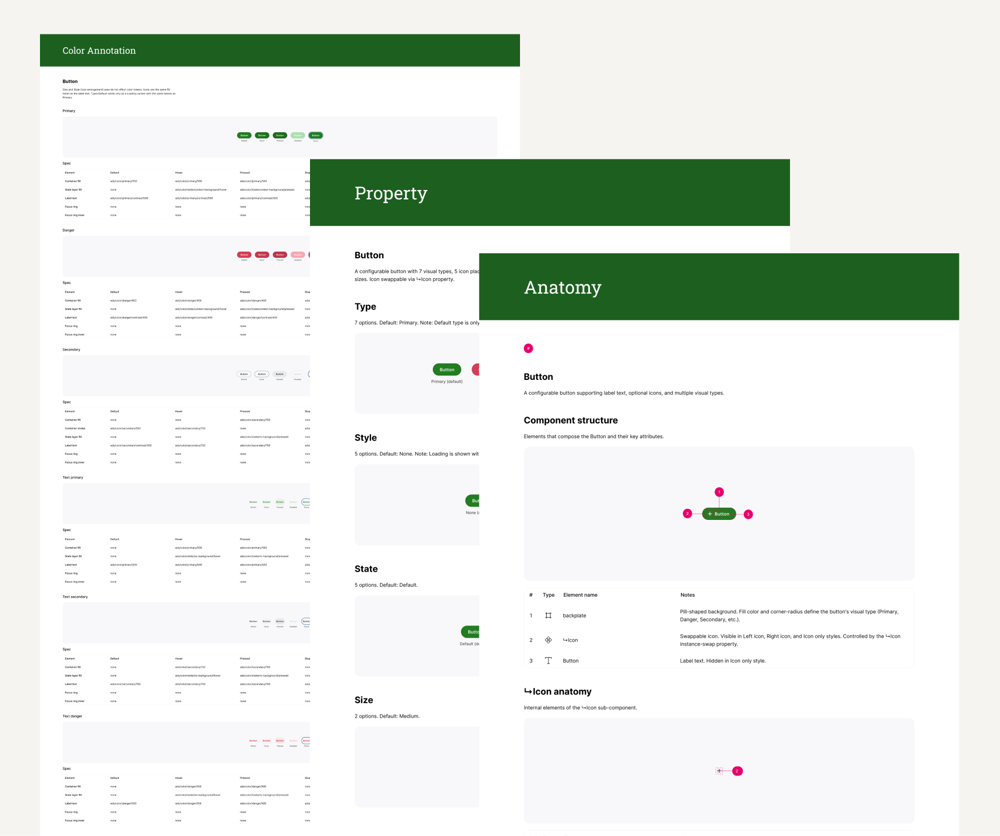

QUESTRADE design system
Role: UX/UI Design system designer
Team: Cross-functional (Designers, Developers, Product manager and Leadership)

THE BRIEF
Evolving a single-theme design system into a scalable, multi-brand infrastructure built for enterprise growth.
OVERVIEW
As Questrade's digital ecosystem expanded, our objective was to evolve AllSpark from a single-theme design system into a scalable, multi-brand platform. By grounding our strategy in user research and implementing a token-based architecture, we aimed to transform the system into a high-velocity engine that aligns design and engineering across the entire organization.
THE CHALLENGE
Navigating Design System Maturity
Questrade's legacy design system, AllSpark, was suffering from an identity crisis. Despite its existence, it failed to provide value to its users, resulting in a 90% component detachment rate.
THE SOLUTION
From Static Assets to an Adaptive Platform
Move from an uncoordinated collection of assets to an Integrated & Adaptive platform that drives cross-organizational velocity.

THE RESEARCH
To move beyond assumptions, we did a comprehensive quantitative and qualitative research initiative. Through practice assessments, usage data audits, and deep-dive interviews with designers and engineers, four systemic failures emerged:
Discovery Deficit: Fragmented documentation left teams guessing where resources lived.
Design-Code Friction: Stale Figma files didn't match production code, rendering them unusable.
Communication Silos: Product teams were blind to updates, leading to version drift.
Rigid Architecture: The system couldn't scale from high-density trading platforms (Atlas) to expressive marketing sites (Q.com).

THE STRATEGIC APPROACH
Before building new components, we had to understand the "chaos" we were inheriting. I led a comprehensive Component Inventory as the foundational step for Allspark. We didn't just look at Figma; we audited the live products. We mapped out every instance of UI elements to identify inconsistencies.
Optimization and Accessibility
We focused on building a library that didn't just look good but worked for every Questrade user.
Making All Our Components Accessible: A key priority in developing Allspark was embedding accessibility (a11y) into every design decision from day one. Instead of treating accessibility as a "final check," we built it into the components:
- Visual Clarity: We enforced strict color contrast standards (WCAG AA/AAA) and implemented clear, high-visibility focus states.
- Interaction Design: We standardized keyboard interactions and proper ARIA labeling to ensure screen-reader compatibility.
- Cognitive Load: We optimized grid widths and typography scales to improve content legibility and reduce eye strain.
CENTRALIZING THE SOURCE OF TRUTH
We launched the AllSpark Hub, a unified portal bridging the gap between design and engineering. This ecosystem included:
Live Documentation: Integrated Storybook playgrounds and code snippets.
Theme Builder: A tool to visualize and test systemic changes in real-time.
Strategic Visibility: Public roadmaps and release notes to build trust and transparency.
Multi-Brand Architecture & Tokenization
When I joined, the system relied on static styles. I recognized that to truly scale, we needed a Data-Driven Design approach. I prepared and presented a strategic proposal to leadership to implement Design Tokens. I successfully advocated for tokens as the "shared language" between design and engineering. By treating design decisions (colors, spacing, motion) as data, we could ensure that a single update in Figma would propagate throughout our entire ecosystem.

Why Design Tokens are a Strategic Asset:
- Efficiency at Scale: Implementing a token-based system significantly cuts down development time for new themes.
- Breaking Down Silos: Tokens act as a single source of truth, aligning designers and developers on a technical level.
- Instant Global Updates: Designers can change a brand color or a corner radius once, and the change reflects instantly across all platforms.
- Future-Proofing: Tokens allow us to roll out Dark Mode or new sub-brands in a fraction of the time it would take to manually recode the UI.

Closing the Feedback Loop: A Culture of Contribution
We shifted the culture from "using a tool" to "contributing to a community" by treating the design system as a living product. To build trust and keep the system relevant, we opened several lines of communication:
Active Engagement: We broke down silos by launching a dedicated Slack ecosystem for real-time support, hosting monthly "show and tell" demos, and creating transparent feedback funnels to capture user needs.
A Defined Contribution Lifecycle: We empowered product teams to help grow the system through a structured, four-stage process: Propose (ideas validated via Slack), Define & Review (contributors provide mockups, AllSpark team ensures feasibility), The AllSpark Polish (core team optimizes token alignment and auto-layout), Ownership & Recognition (updates broadcast, contributors credited).

Impact and Outcomes
By transitioning to the Allspark system, we have fundamentally changed how Questrade builds products:
- Unified Brand Identity: For the first time, our digital products share a 100% consistent visual language.
- 30% Faster Deployment: The bridge between design handoff and production has been shortened, allowing teams to focus on feature logic rather than UI styling.
- Engineering Alignment: Developers now reference tokens instead of "guessing" hex codes, leading to cleaner, more maintainable codebases.


CENTRALIZING THE TRUTH
The true test of the new architecture was Atlas, Questrade's advanced trading platform.
Impact: By leveraging the new tokenized system instead of building custom UI, the Atlas team saved ~$1.1M in labour costs (~17,000 hours). This proved that a flexible system isn't just a design luxury—it's a massive financial lever.
AI ACROSS THE SYSTEM
Scaling Documentation with Claude and Figma MCP
With a token architecture in place, the next challenge was documentation — specifically, keeping it accurate and complete without adding weeks of manual work every time a component changed.
I used Claude and Figma MCP together to generate structured documentation directly from the live Figma library. For each component, this covered three areas:
Color token mapping: Instead of manually cross-referencing token names with their semantic roles, I used Claude to read component data from Figma and output structured token tables — mapping each property (fill, border, text) to its correct token at every state.
Anatomy and structure: For every component, Claude generated anatomy breakdowns describing each layer, its role, and how it connects to the token hierarchy. This gave both designers and developers a shared reference that actually matched what was in Figma.
States and interactions: Each component's states — default, hover, focus, disabled, error — were documented with their corresponding token values and interaction notes, ready for handoff without a designer needing to write it by hand.
The result was a documentation layer that stayed in sync with the system and reduced the back-and-forth between design and engineering during handoff. What used to take days per component was compressed into a repeatable, consistent process.
Component building and iteration: Beyond documentation, I used Claude and Figma MCP to build new components and adjust existing ones directly in Figma. By describing the structure, variants, and token requirements in plain language, I could generate and refine components faster — then review and polish them rather than building from scratch.
Token auditing: I ran token audits across the component library using Claude to surface inconsistencies — components using hardcoded values instead of tokens, mismatched semantic roles, or tokens applied to the wrong properties. This turned a tedious manual process into a targeted review, catching gaps that would have slipped through otherwise.
Prototyping: I also used AI to build prototypes for new flows and component interactions, shortening the feedback loop between ideation and stakeholder review. Instead of spending time wiring frames, I could focus on validating the right interactions faster.
Across all of these, the pattern was the same: AI handled the repetitive and error-prone parts, freeing up time to focus on the decisions that actually required design judgment.

RESULTS
ENTERPRISE SAVINGS
~$2.5M
Total of 40.000 developers hours saved
REALIABILITY
89%
Reduction in component detachment
ADOPTION
+28%
growth in integrated product teams (38 total)